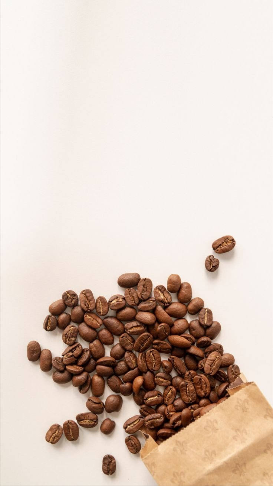
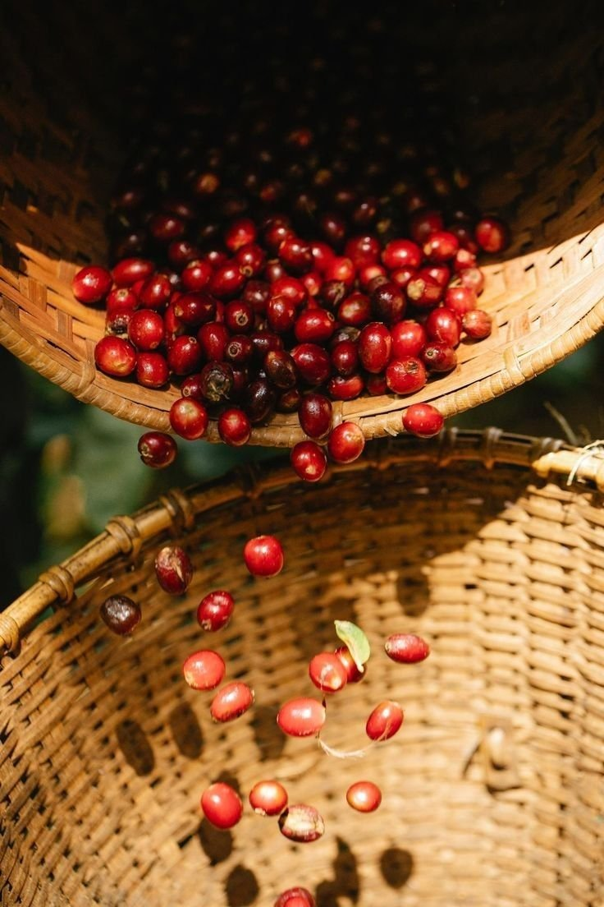
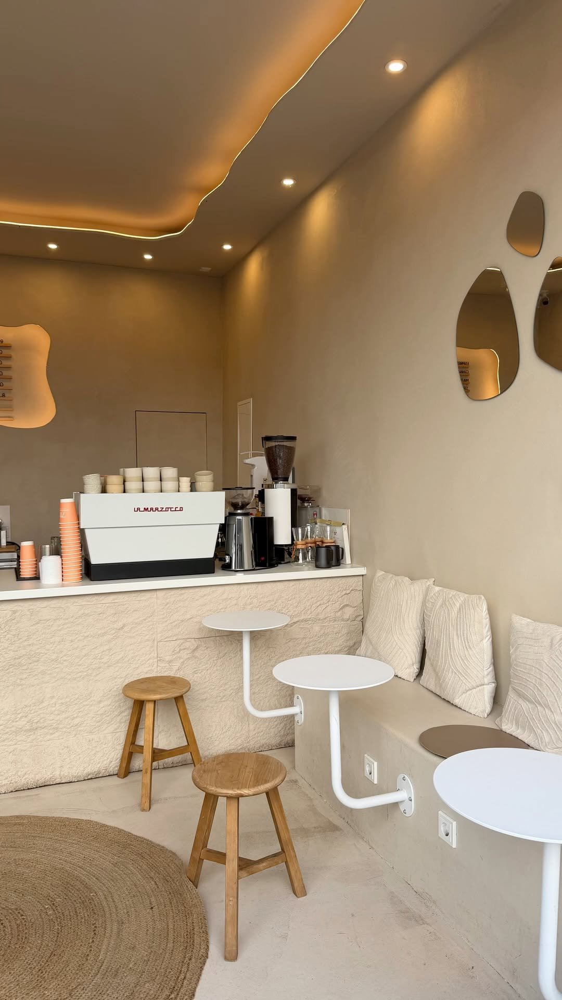

EST. 2021 · YIRGACHEFFE, ETHIOPIA · 2,200 M
Grown high. Roasted Tuesday.
Single-origin Yirgacheffe from 2,200 m. Roasted in small batches, every Tuesday — never more than we can sell fresh.
Roasted every Tuesday. Ships within 48 hours. No syrups, no shortcuts.
Medium — Balanced. Blueberry and jasmine, with a honeyed sweetness. The one we drink ourselves, every morning.
The Craft
Three steps. No shortcuts. Pick the cherry, roast it small, brew it slow.


Select
We buy one lot from one washing station in Yirgacheffe — washed, 2,200 m, Grade 1. Nothing blended, nothing hidden.
Roast
Every Tuesday, 12 kg at a time. We cup every batch and keep the roast curve on the wall, so Tuesday tastes like Tuesday.
Brew
Ground to order, 94°C water, 22 g to 340 ml. If it does not taste like blueberry and jasmine, we do not serve it.
Origin
2,200 m
Yirgacheffe, Ethiopia

Order beans, or just come in.
The kettle is on from eight. If you want a bag, tell us which roast — we reply the same day.
